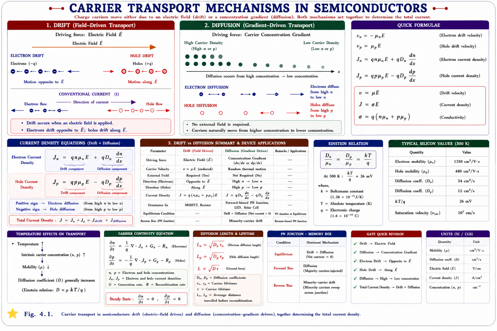
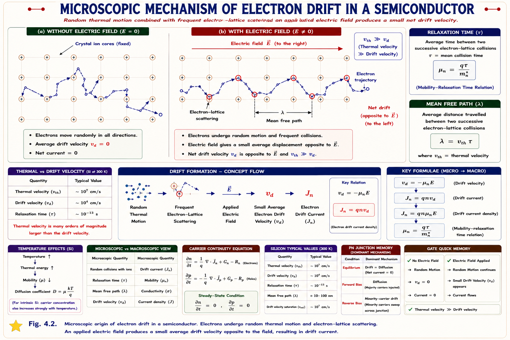
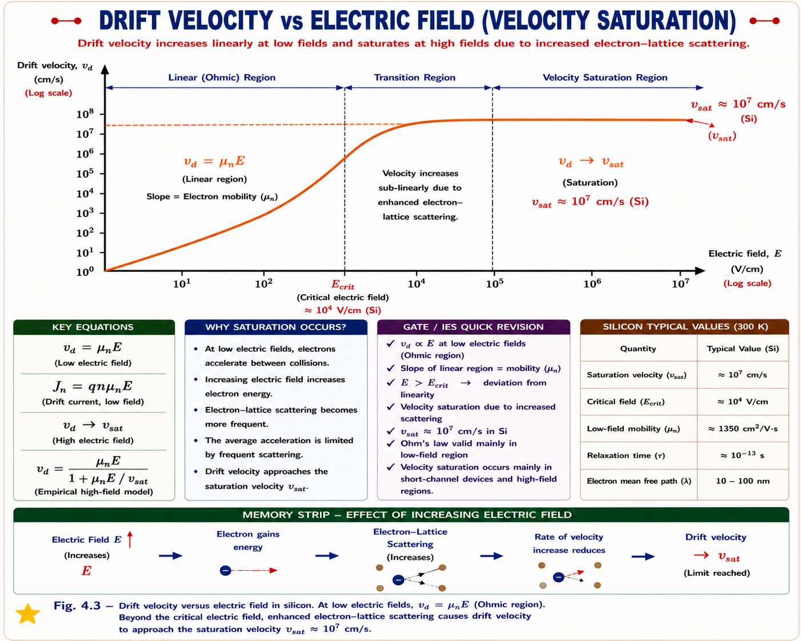
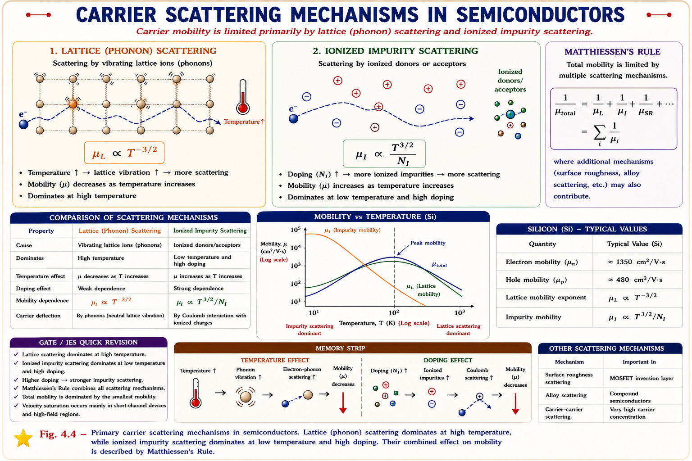
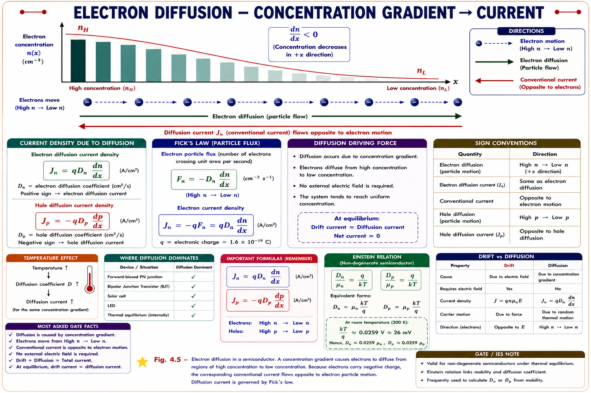
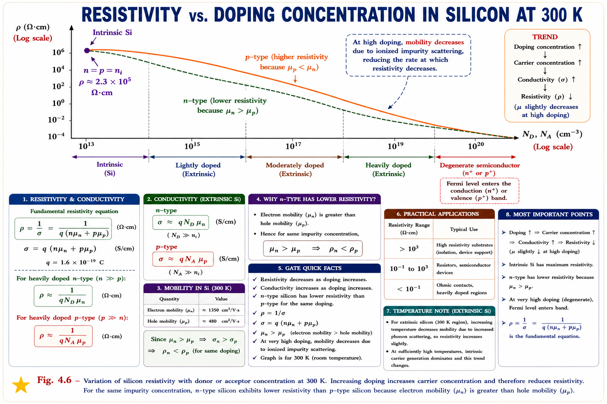
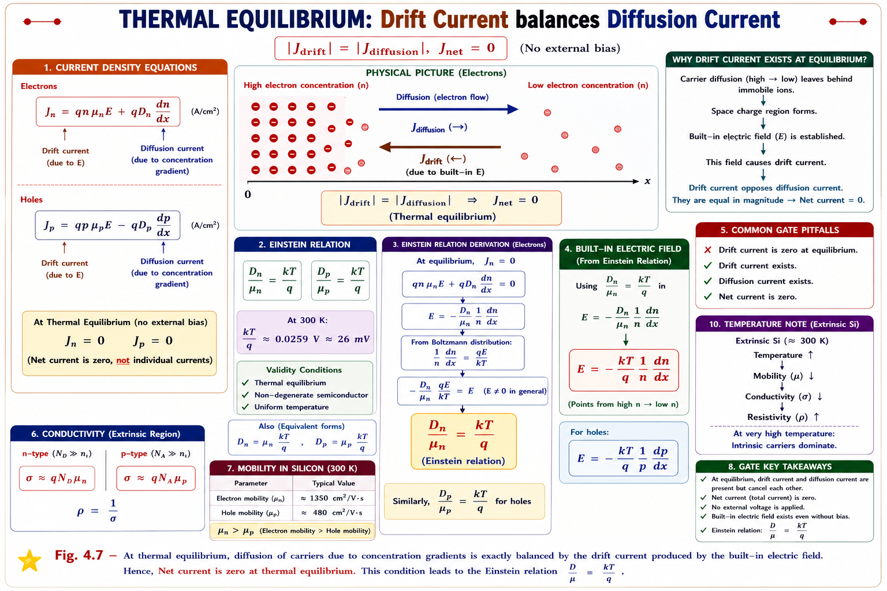

How electrons and holes move in semiconductors — electric-field-driven drift, concentration-gradient-driven diffusion, mobility, conductivity, resistivity, and the unifying Einstein relation. Complete GATE EC/EE and IES coverage with full derivations, SVG visualisations, and solved PYQs.
A semiconductor by itself just sits there. It becomes useful — a diode, a transistor, a solar cell — the moment we make carriers move in a controlled, predictable way. There are exactly two distinct physical mechanisms that drive carrier motion in semiconductors:
Every semiconductor device — diode, BJT, MOSFET, solar cell, photodetector — operates because of one or both of these mechanisms. Understanding drift and diffusion is therefore the key that unlocks all of semiconductor electronics. Both currents add algebraically to give the total current density: \(J_{total} = J_{drift} + J_{diffusion}\).

Imagine a crowded street where everyone is walking randomly in all directions — nobody is going anywhere on average. This is the situation in a semiconductor at thermal equilibrium: carriers move at very high thermal velocities (~105 m/s for electrons in Si), but the net motion in any direction is zero because collisions randomise velocity after every \(\approx 10^{-13}\) s (mean free time \(\tau_c\)).
Now apply an electric field — like a gentle slope on that street. Carriers still collide and scatter as before, but between collisions they are slightly accelerated by the field. This tiny bias adds up to a measurable net drift velocity superimposed on the chaotic thermal motion.[1]
Thermal velocity ≈ 105 m/s is enormous. Drift velocity in typical GATE problems is ~10² to 10³ m/s — three orders of magnitude smaller! Yet drift velocity is what carries current, because thermal motion averages to zero.

Between two successive collisions, a carrier in field \(\mathcal{E}\) is accelerated by the force \(F = q\mathcal{E}\). If the mean free time (average time between collisions) is \(\tau_c\), the average velocity gained between collisions — the drift velocity — is:[1],[2]
This defines carrier mobility \(\mu\) — the proportionality constant between drift velocity and electric field:
Mobility tells you how fast a carrier drifts per unit electric field. Higher mobility → carrier responds more aggressively to the field → more current. Mobility is determined by two things: how long the carrier travels before a collision (\(\tau_c\)) and how heavy the carrier feels to the field (\(m^*\) — effective mass). Lighter carriers with longer free paths have higher mobility.
| Parameter | Silicon (Si) | Germanium (Ge) | GaAs |
|---|---|---|---|
| μₙ — Electron Mobility | 1350 cm²/V·s | 3900 cm²/V·s | 8500 cm²/V·s |
| μₚ — Hole Mobility | 480 cm²/V·s | 1900 cm²/V·s | 400 cm²/V·s |
| μₙ/μₚ ratio | ≈ 2.8 | ≈ 2.1 | ≈ 21 |
| Band Gap | 1.12 eV | 0.66 eV | 1.43 eV |
Source: Neamen, Semiconductor Physics and Devices, 4th ed., Table 3.2. Electrons are always more mobile than holes in most semiconductors — holes move through bond-to-bond hopping which has higher effective mass.
Always remember: μₙ > μₚ for silicon. In GaAs, the ratio is extreme (≈21), which is why GaAs devices can operate at much higher frequencies. Questions often test whether you know the ratio or which carrier dominates.

Consider a semiconductor slab with electron concentration \(n\) (electrons/cm³) and hole concentration \(p\) (holes/cm³), each moving with respective drift velocities in response to an applied field \(\mathcal{E}\).
The electron drift velocity is \(v_{dn} = \mu_n \mathcal{E}\) but electrons move opposite to \(\mathcal{E}\). Current density is charge flux:
The two negatives cancel — electrons moving left under a right-pointing field produce a conventional current density pointing right (same direction as \(\mathcal{E}\)).
Holes carry charge \(+q\) and drift in the direction of \(\mathcal{E}\):
Since both contributions are in the direction of \(\mathcal{E}\):
Both electrons (negative charge, negative velocity relative to field) and holes (positive charge, positive velocity relative to field) produce current in the direction of the electric field. This is why the total drift current adds up, not subtracts. This fact trips up many GATE aspirants who confuse particle flow direction with current direction.
Mobility is fundamentally limited by how often carriers collide and scatter. There are two dominant scattering mechanisms in semiconductors:[1],[3]

| Factor | Effect on μ | Physics Reason | GATE Probability |
|---|---|---|---|
| ↑ Temperature | μ decreases | More phonon scattering; μ ∝ T⁻³/² | 🟢 High |
| ↑ Doping (Nd or Na) | μ decreases | More ionised impurity scattering | 🟢 High |
| Effective mass m* | μ ∝ 1/m* | Heavier carriers respond less to field | 🟡 Medium |
| Intrinsic Si (low doping) | μ highest | Fewest impurities; only phonon scattering | 🟢 High |
| High electric field | μ degrades (vₛₐₜ) | Velocity saturation; μ_eff = vₛₐₜ/ℰ | 🟡 Medium |
Conductivity vs. Mobility: Adding more dopants increases carrier concentration \(n\) but simultaneously decreases \(\mu\). Conductivity \(\sigma = qn\mu\) can still increase because the increase in \(n\) usually dominates. But mobility itself always decreases with increased doping — never forget this.
Think of a room full of perfume molecules released from one corner. Even with no wind (no field), the molecules spread uniformly throughout the room over time. This is diffusion — pure statistical spreading driven by the randomness of thermal motion wherever a concentration gradient exists.[2]
In a semiconductor, if electrons are injected into one end of a bar (creating a high concentration there), those electrons — even without any electric field — will statistically drift away from the crowded region toward the less-crowded region. This net motion of charged particles constitutes a diffusion current.
Drift current needs an electric field. Diffusion current needs a concentration gradient. Both can exist simultaneously. In a p-n junction at equilibrium, drift and diffusion currents exactly cancel each other — producing zero net current even though both mechanisms are active!

The diffusion flux of particles (Fick's First Law) is proportional to the concentration gradient and opposes it (flows from high to low). For electrons with concentration \(n(x)\):[1],[4]
The sign in the hole diffusion equation is negative. Holes flow from high to low concentration (positive dn/dx means flow in the +x direction), but the negative sign accounts for the fact that conventional current due to positive charges flowing right is positive — and the gradient being negative (falling to right) reverses things. Keep the equations as given — never guess signs.
Combining drift and diffusion, the total electron and hole current densities are:
Here \(D_n\) and \(D_p\) are the diffusion coefficients (cm²/s) for electrons and holes, respectively. They measure how fast carriers spread under a concentration gradient.
| Quantity | Symbol | Silicon (300K) | Units | Relation to μ |
|---|---|---|---|---|
| Electron diffusion coeff. | \(D_n\) | \(25 \text{ cm}^2/\text{s}\) | \(\text{cm}^2/\text{s}\) | \(D_n = \mu_n \cdot V_T\) |
| Hole diffusion coeff. | \(D_p\) | \(10 \text{ cm}^2/\text{s}\) | \(\text{cm}^2/\text{s}\) | \(D_p = \mu_p \cdot V_T\) |
| Thermal voltage | \(V_T\) | \(0.02585 \text{ V} \approx 26 \text{ mV}\) | V | \(V_T = kT/q\) |
The material's ability to conduct current is captured by the conductivity \(\sigma\) (siemens/cm) and its inverse, resistivity \(\rho\) (Ω·cm). From the drift current equation \(J = \sigma\mathcal{E}\):[2]

Drift and diffusion are not independent — both arise from the same physical process of thermal carrier motion in the semiconductor. At thermal equilibrium, the net current must be zero everywhere. Applying this condition to a semiconductor with a built-in electric field (like a non-uniformly doped material) forces the drift and diffusion current contributions to cancel, leading to a fundamental relationship between \(D\) and \(\mu\).[1],[2],[3]
In equilibrium, \(J_n = 0\). So \(qn\mu_n\mathcal{E} + qD_n\frac{dn}{dx} = 0\). Using the Boltzmann distribution for \(n(x) = n_0 \exp(-qV/kT)\) and Poisson's equation \(\mathcal{E} = -dV/dx\), the drift and diffusion terms cancel only if \(D_n/\mu_n = kT/q\). This is the Einstein relation.
At 300 K: \(D_n = \mu_n \times 0.026\) and \(D_p = \mu_p \times 0.026\). Since \(\mu_n = 1350\) cm²/V·s, \(D_n = 1350 \times 0.026 \approx 35\) cm²/s. Since \(\mu_p = 480\) cm²/V·s, \(D_p = 480 \times 0.026 \approx 12.5\) cm²/s. These numbers appear very frequently in GATE numericals. Learn the Einstein relation forward and backward.

Students often write \(J_p^{diff} = +qD_p\frac{dp}{dx}\). The correct form is \(J_p^{diff} = -qD_p\frac{dp}{dx}\). Holes flowing down a positive gradient (right) give a rightward (positive) current — the negative of the negative gradient — so the overall sign works out, but writing it wrongly leads to sign errors in problems.
Electrons drift opposite to the electric field. But conventional current flows in the direction of the field. Many students flip this. Remember: \(J_{drift}\) is always in the direction of \(\mathcal{E}\) for both carriers.
The relation is \(D/\mu = kT/q\), so \(D = \mu \cdot (kT/q)\). At 300 K, \(kT/q \approx 0.026\) V. Students sometimes invert this: \(\mu = D \cdot kT/q\), which is wrong. If you double \(\mu\), you double \(D\) — they scale together.
In an intrinsic semiconductor, \(\sigma = qn_i(\mu_n + \mu_p)\). In a lightly doped n-type, holes still contribute a little. Most GATE problems specify either strongly n-type or p-type so you can neglect minority carriers — but check the doping level before dropping a term.
Mobility is strongly temperature-dependent: \(\mu \propto T^{-3/2}\) (lattice scattering dominant at room temperature). At high temperatures, mobility drops and resistivity rises — this is opposite to metals where resistivity increases with temperature for a different reason (more scattering), but the sign is the same for the resistivity trend.
Given: \(n \approx N_d = 5 \times 10^{16}\) cm⁻³, \(p \approx n_i^2/n \approx (1.5\times10^{10})^2/(5\times10^{16}) \approx 4500\) cm⁻³ (negligible)
(a) Electron drift velocity:
(b) Hole drift velocity:
(c) Total drift current density:
The hole contribution is \(J_p = qp\mu_p\mathcal{E} = (1.6\times10^{-19})(4500)(400)(100) \approx 2.88\times10^{-11}\) A/cm² — completely negligible. In strongly doped n-type material, only electrons contribute to drift.
(b) Thermal voltage at 400 K:
(a) Diffusion coefficient via Einstein relation:
Note that \(V_T\) at 400 K (34.5 mV) is higher than at 300 K (26 mV). This is linear in temperature. \(D_p\) also increases, meaning diffusion is faster at higher temperatures — carriers have more thermal energy to spread.
Intrinsic silicon has \(\rho \approx 2.3 \times 10^5\) Ω·cm at room temperature — about 10 orders of magnitude more resistive than copper (∼1.7 μΩ·cm) and about 5 orders of magnitude less resistive than a good insulator like SiO₂ (∼10¹⁵ Ω·cm). This is why it is called a semiconductor.
In a p-type semiconductor, the hole concentration is \(10^{16}\) cm⁻³ and the hole mobility is 400 cm²/V·s. If an electric field of 50 V/cm is applied, the drift current density is:
Key: Direct application of \(J_p = qp\mu_p\mathcal{E}\). The minority electrons contribute negligibly in heavily doped p-type.
The electron and hole mobilities in a semiconductor are 0.135 m²/V·s and 0.048 m²/V·s respectively. If the intrinsic carrier concentration is \(1.5 \times 10^{16}\) m⁻³, the electron and hole diffusion coefficients at 300 K are, respectively:
Solution: \(D_n = \mu_n \cdot V_T = 0.135 \times 0.026 = 3.51\times10^{-3}\) m²/s. \(D_p = 0.048 \times 0.026 = 1.25\times10^{-3}\) m²/s.
In a semiconductor bar, the electron concentration varies linearly from \(10^{17}\) cm⁻³ at \(x=0\) to \(10^{15}\) cm⁻³ at \(x = 10\) μm. The bar has no applied electric field. The electron diffusion current density at \(x = 0\) is: (Take \(D_n = 25\) cm²/s, \(q = 1.6\times10^{-19}\) C)
Solution: \(\frac{dn}{dx} = \frac{10^{15} - 10^{17}}{10 \times 10^{-4}} = \frac{-0.99\times10^{17}}{10^{-3}} \approx -9.9\times10^{19}\) cm⁻⁴. \(J_n = (1.6\times10^{-19})(25)(-9.9\times10^{19}) \approx -396 \approx -400\) A/cm². Current flows in −x direction (electrons diffuse in +x). Conventional current is negative.
The conductivity of an n-type semiconductor increases when the temperature is raised from 300 K to 400 K. Which of the following is the most probable reason?
Explanation: At high enough temperatures, thermally generated carriers exceed the doped carrier concentration. \(n_i \propto e^{-E_g/2kT}\) rises steeply; this increase in \(n\) dominates the decrease in \(\mu \propto T^{-3/2}\), and conductivity rises overall.
As the temperature of an intrinsic semiconductor increases, its resistivity:
Key Contrast with Metals: Metals have fixed carrier concentration; heating only reduces μ → ρ increases. Semiconductors have exponentially growing \(n_i\) with temperature → ρ decreases. This is the fundamental difference between metallic and semiconducting conduction.
Field → drift. Gradient → diffusion. "Field drives, Gradient glides." Drift needs field force; diffusion just needs a density slope.
For electrons: Jₙ_diff = +qDₙ(dn/dx) — same sign as gradient (electrons go down
the gradient, and since they're negative, conventional current goes up — but the formula has a + because two
negatives cancel).
For holes: Jₚ_diff = −qDₚ(dp/dx) — has a minus. Memory trick:
"Holes have a hole (negative sign) in their diffusion equation."
"Nimble n-type carriers, Sluggish p-type holes." Electrons are about 3× more mobile than holes in silicon. Think of electrons as speedy motorcycles, holes as slow buses that move by passengers (bonds) getting off and on.
"D over mu equals kT over q" — the ratio \(D/\mu\) is always the thermal voltage \(V_T\). At room temperature ≈ 26 mV. Story: "Albert Einstein (diffusion expert) is paid in Thermal Voltage per unit Mobility." Remember: D = μ × 26mV (at 300K). To go from μ to D: multiply by 0.026. To go from D to μ: divide by 0.026.
"Metals Moan when hot" — resistivity increases with T. "Semiconductors Smile when hot" — resistivity decreases with T. Different physics: metals have fixed carriers (only μ changes); semiconductors have growing \(n_i\) (overwhelms μ decrease).
\(v_d = \mu\mathcal{E}\). Electrons opposite to ℰ. Holes with ℰ. At high fields: saturation at vₛₐₜ ≈ 10⁷ cm/s.
\(J_{drift} = q(n\mu_n + p\mu_p)\mathcal{E}\). Both carriers contribute in same direction. Units: A/cm².
\(J_n^{diff} = qD_n\frac{dn}{dx}\). \(J_p^{diff} = -qD_p\frac{dp}{dx}\). Note opposite signs!
μₙ = 1350 cm²/V·s; μₚ = 480 cm²/V·s. μ ∝ T⁻³/² (lattice). μ ↓ with doping (impurity scattering).
\(\sigma = q(n\mu_n + p\mu_p)\). \(\rho = 1/\sigma\). Intrinsic: \(\sigma_i = qn_i(\mu_n+\mu_p)\).
\(D_n/\mu_n = D_p/\mu_p = kT/q = V_T\). At 300 K: \(V_T \approx 26\) mV. \(D_n \approx 35\) cm²/s, \(D_p \approx 12\) cm²/s.
\(J_{total} = J_n + J_p\). \(J_n = qn\mu_n\mathcal{E} + qD_n\frac{dn}{dx}\). \(J_p = qp\mu_p\mathcal{E} - qD_p\frac{dp}{dx}\).
🟢 Einstein relation (very high). 🟢 Drift current density. 🟢 μₙ vs μₚ. 🟡 Temperature effects on μ. 🟡 Diffusion signs.
nᵢ = 1.5×10¹⁰ cm⁻³. μₙ=1350, μₚ=480 cm²/V·s. Dₙ≈35, Dₚ≈12.5 cm²/s. ρᵢ ≈ 2.3×10⁵ Ω·cm.
Have a doubt about drift current, diffusion, mobility, or the Einstein relation? Ask your tutor:
Excess Carriers in Semiconductors — generation and recombination processes, minority carrier lifetime, continuity equations, diffusion length, and the connection to p-n junction analysis. This chapter bridges the gap between carrier transport theory and actual device physics.
All technical content is derived from the following standard textbooks. All explanations, derivations, diagrams, and examples are original to Aarova AI.